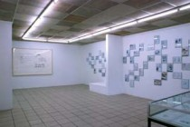
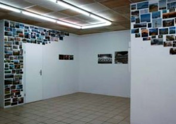
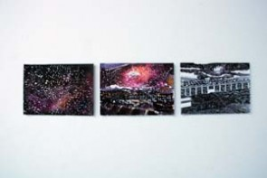
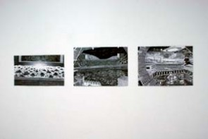

Spezifisches

installation view Johansson

installation view Johansson, Kisch

installation view Bannat, Ravens
The first show in the 2009 series opens on saturday, february 14, 7-9pm
Feb. 14 - March 28, 2009
About Drawing
Sven-Ake Johansson, Jürgen Kisch, Christoph Bannat und Thomas Ravens

installation view Ravens

Thomas Ravens

Thomas Ravens